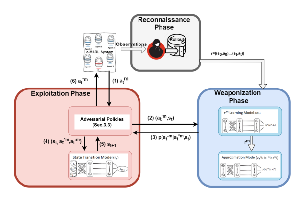

|
Tongtong (Frank) Liu
I am a senior undergraduate student at Wake Forest University, pursuing a double major in Computer Science and Mathematical Business.
I am also an undergraduate researcher advised by Dr. Sarra Alqahtani and Dr. Mu Qiao , where my major research interests lies in robustness of Reinforcement Learning, explainable Reinforcement Learning (XRL), Machine Learning, and AI Foundational Model.
I have also interned in various technology companies like ByteDance (TikTok), IBM, DataMimo, and Mesoor AI. I have expereince in Software Deveopler Engineering, Machine Learning Engineering, and Research Scientists. I co-founded The Wakers and also participated in lots of different projects around ML.
Email /
Resume /
LinkedIn /
Github
|
|
|
Research
I'm interested in Data Mining, Machine Learning, and Reinforcement Learning. Specifically, I focuses on Foundational AI Model, the robustness and explainability in reinforcement learning agents.
|
|

|
On Weaponizing Actions in Multi-Agent Reinforcement Learning: Theoretical and Empirical Study on Security and Robustness
Tongtong Liu , Joe McCalmon, Cameron Lischke, Md Asifur Rahman, Talal Halabi, Sarra Alqahtani
UAI (in review), 2022
Cooperative Multi-Agent Reinforcement Learning (c-MARL) enables a team of agents to determine the global optimal policy that maximizes the sum of their accumulated rewards. In this paper, we investigate the robustness of c-MARL to a novel adversarial threat, where we target and weaponize one agent, termed the compromised agent, to create natural observations that are adversarial for its team. The goal is to lure the compromised agent to follow an adversarial policy that pushes activations of its cooperative agents’ policy networks off distribution.
|
|
|
Robustness-driven Exploration with Probabilistic Metric Temporal Logic
Xiaotian Liu, Pengyi Shi, Tongtong Liu , Sarra Alqahtani, Paul Pauca, Miles Silman
ICAART, 2021
The ability to perform autonomous exploration is essential for unmanned aerial vehicles (UAV) operating in unknown environments where it is difficult to describe the environment beforehand. Algorithms for autonomous exploration often focus on optimizing time and full coverage in a greedy fashion that collect irrelevant data and wastes time navigating areas with no important information. In this paper, we aim to improve the efficiency of exploration by maximizing the probability of detecting valuable information
|
|
|
Multi-Agent Reinforcement Learning for Cooperative Adaptive Cruise Control
Joe McCalmon, Ashley Peake, Benjamin Raiford, Tongtong Liu , Sarra Alqahtani
ICTAI, 2020
A growing trend in the field of autonomous vehicles is the use of platooning. The design of control algorithms for platoons is challenging considering that coordination among vehicles is obtained through diverse communication channels. In this paper, we propose a multi-agent reinforcement learning approach for autonomous vehicles which communicate in a platoon formation.
|
|
{kind=link}